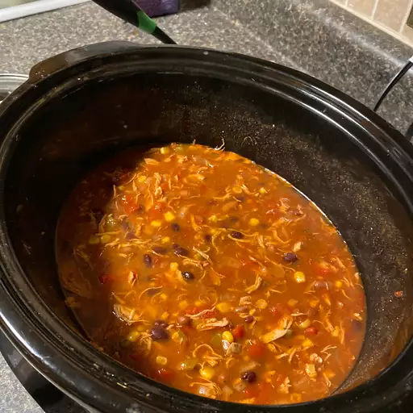

Slow Cooker Taco Soup
This is a quick, throw together slow cooker soup packed with all the flavors you'd expect in a Tex-Mex chili. Simply adjust to your taste, adding more taco seasoning, or freshly chopped jalapeno peppers for extra heat. Teenagers love this soup topped with tortilla chips, shredded Cheddar cheese and a dollop of sour cream.
Some facts about the recipe
- Prep. time: 10 mins
- Cook time 8 hrs
- Total time: 8 hrs 10 mins
- Servings: 8
- Yield: 8 servings
This hearty, cozy, and boldly flavored taco soup recipe will win you over with a savory blend of chile peppers, kidney beans, ground beef, and Southwestern-inspired spices.
With super-easy prep and slow-cooker shortcut, this family-friendly dish never fails to impress. Learn how to make home-style taco soup, plus get tips on freezing and what to serve with it.

Ingredients
- 1 pound ground beef
- 1 onion, chopped
- 1 (16 ounce) can chili beans, with liquid
- 1 (15 ounce) can kidney beans with liquid
- 1 (15 ounce) can whole kernel corn, with liquid
- 1 (8 ounce) can tomato sauce
- 2 cups water
- 2 (14.5 ounce) cans peeled and diced tomatoes
- 1 (4 ounce) can diced green chile peppers
- 1 (1.25 ounce) package taco seasoning mix
Directions
- In a medium skillet, cook the ground beef until browned over medium heat. Drain, and set aside.
- Place the ground beef, onion, chili beans, kidney beans, corn, tomato sauce, water, diced tomatoes, green chile peppers and taco seasoning mix in a slow cooker. Mix to blend, and cook on Low setting for 8 hours.